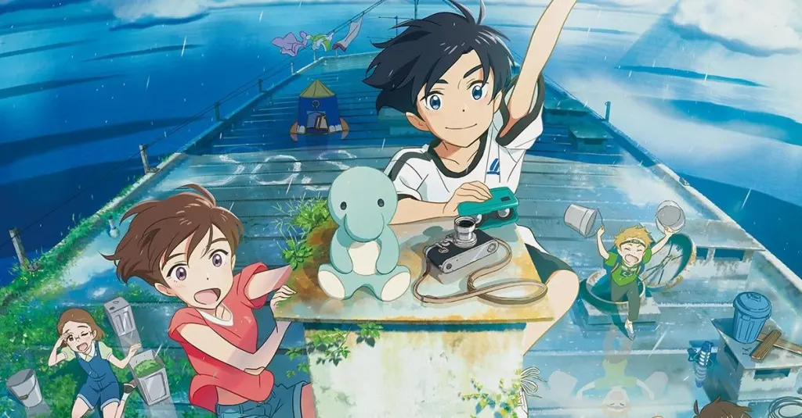

☆Gênero: Mistério/ Drama/ Ação
☆lançamento: 16/09/2022
☆diretor(a): Hiroyasu Ishida
☆Studio: studio Colorido
☆classificação indicativa: +10
avaliação:★★★★☆ (4,5)
Sinopse
Um grupo de crianças à deriva em um prédio abandonado tenta voltar para casa e embarca em uma jornada de amadurecimento, que os ensina a aprender a desapegar das coisas do passado.